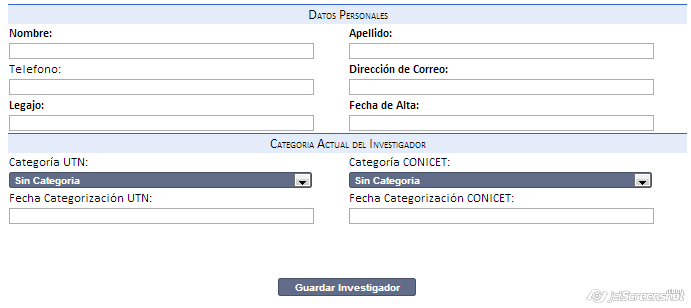
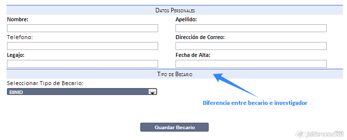

Como Secretario se tiene la capacidad de poder agregar nuevos investigadores o becarios al sistema, para luego poder asignarlos a un o varios proyectos.
Para ello solo debe:

En caso de los becarios, el procedimiento es el mismo, pero remplazando la categorización por la selección del tipo de becario:

*Estas mismas pantallas son utilizadas para la modificación de los datos
Created with the Personal Edition of HelpNDoc: Easily create CHM Help documents